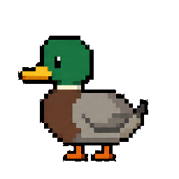

真正的桌面陪伴
常驻桌面，可拖动、调大小、隐藏或退出。工作时安静，休息时更活泼。

PERSONAL DESKTOP COMPANION
它不只是在桌面上循环播放动画。未来，它会理解你的工作状态，用动作和轻量反馈陪伴你，同时把隐私、权限和安静的选择权始终交给你。
常驻桌面，可拖动、调大小、隐藏或退出。工作时安静，休息时更活泼。
连接 Codex、Obsidian、ZERO 与浏览器后，用动作表达工作、阅读、思考和完成。
选择 Milo 等现有角色，未来也可将合法拥有的宠物照片或插画制作成新桌宠。
文字交流、建议、提醒与可选语音反馈；不需要时，它也可以只是单纯的桌宠。
外部能力默认关闭。需要上传内容时，先说明上传什么、为什么，并由你确认。
记住角色与偏好，异常时安全恢复，并提供易懂的诊断、升级、回滚与卸载入口。
A SIMPLE DAY WITH MILO
Milo 回到熟悉的位置，恢复你的角色与偏好。
它感知工具状态，用动作陪伴，不展示私人正文。
你可以点击、换角色、聊天，或切换为安静模式。
工作结束后恢复轻松状态，也可以随时隐藏或退出。